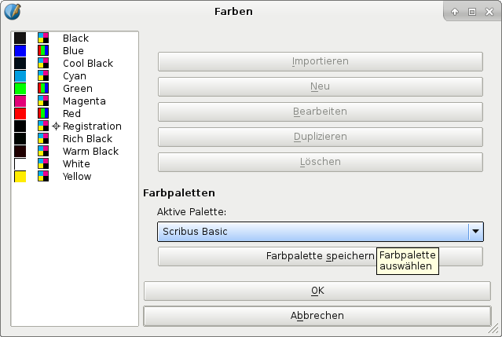
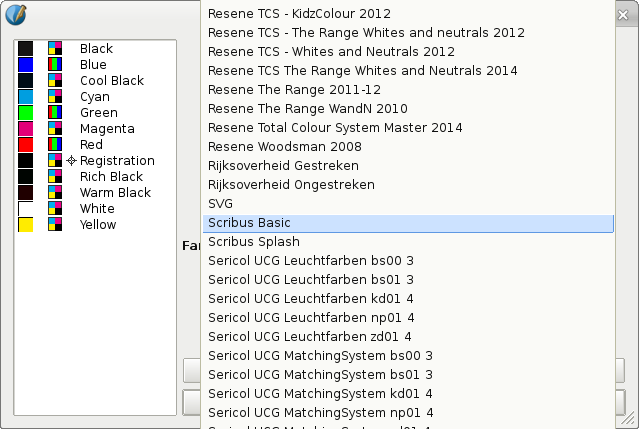
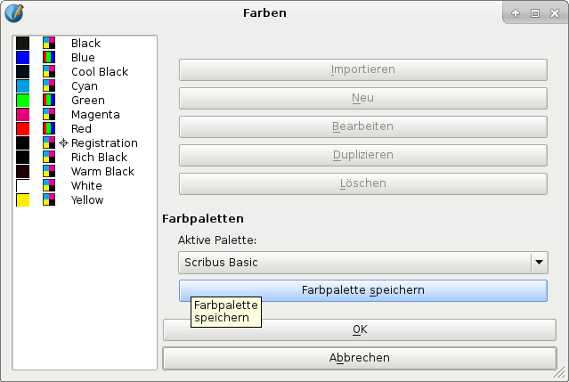

Die Standard-Farbpalette kann nur geändert werden, wenn kein Scribus-Dokument geöffnet ist. Dann öffnet man mit Bearbeiten > Farben die Farbverwaltung:
|  |
|  |
Jetzt kann man für neue Dokumente eine Farbpalette als Standard festlegen. Die Änderungen wirken sich nicht auf bereits existierende Dokumente aus, da die Farbpalette bei ihnen schon im Dokument gespeichert ist.
Manche der Farbpaletten in Scribus sind aus bestimmten Gründen angelegt worden. Deshalb sollte man etwas über Farbpaletten lernen, bevor man die Standard-Farbpalette ändert.
Manchmal besteht auch die Druckerei oder der Auftraggeber auf bestimmte Farben.
Achtung!
In älteren Versionen der Dokumentation sah es aus, als ob Farben in den Scribus-Farbsätzen überhaupt nicht geändert werden können – das kommt aber ganz darauf an, wo diese gespeichert sind und ob man dort Schreibzugriff hat. Wenn man die Farben bearbeitet, ohne daß ein Dokument geöffnet ist, und man den Speicherort der Farben angepaßt hat (z.B. das Home-Verzeichnis des Benutzers), kann man jede Farbe jeder Palette ändern. Durch einen Klick auf Ok wird die Farbpalette für die Zukunft gespeichert. Wenn man die Farbe bei einem geöffneten Dokument ändert, wird die Farbe nur für dieses Dokument geändert. Trotzdem ist davon abzuraten, da Probleme aufgrund geänderter Farben entstehen können, z.B. wenn man Teile eines Dokuments in ein anderes importiert.
Schmuckfarben werden durch den Namen definiert. Eine Änderung der Farbwerte führt hier zwangsläufig zu Fehlern.
Bei einer Standard-Installation kann man die mitgelieferten Farbpaletten nicht ändern. Das ist gewollt, da der Sinn standardisierter Farben ist, daß sie bei allen Dokumenten, auf allen Computern und Plattformen identisch sind. Deshalb werden alle Farbpaletten so installiert, daß man nur Lesezugriff hat, und sie »geblockt« sind.
Natürlich gibt es manchmal Gründe, eine geblockte Palette zu bearbeiten, z.B. wenn man die Anzahl der Farben für ein bestimmtes Projekt reduzieren will. In dem Fall wählt man (ohne geöffnetes Dokument) »Farbpalette speichern«. Dadurch wird eine Kopie im Home-Verzeichnis des Benutzers gespeichert und erscheint in der Liste der verfügbaren Farbpaletten. Diese Palette ist jetzt bearbeitbar. Vorsicht – jede Änderung daran ist dauerhaft!
|  |
Wenn man Farbpaletten eines Drittanbieters gekauft oder heruntergeladen und keine Root- / Administratorrechte hat, kopiert man die Dateien in einen bestimmten Ordner im Home-Verzeichnis. Hat man Root- / Administratorrechte kann man sie auch in den Installationsordner kopieren. Beachten Sie bitte die Lizenzbestimmungen, da viele die Anzahl der Nutzer einschränken.
Hier die relevanten Verzeichnispfade der unterstützten Betriebssysteme:
Wenn man Scribus über einen Paketmanager wie RPM, DEB oder die BSD-Ports installiert hat, müssen die Farbpaletten entweder nach /usr/lib/scribus/swatches oder nach /usr/local/lib/scribus/swatches kopiert werden. Bei 64-Bit-Systemen nach /usr/lib64/scribus/swatches oder /usr/local/lib64/scribus/swatches, sofern man eine 64-Bit-Version installiert hat. Der Ort hängt aber von der Konfiguration des Paketmanagers der Distribution ab.
Wenn man Scribus selbst kompiliert hat, muß man die Farbpaletten nach installation_directory/share/scribus/swatches kopieren.
Falls man keine Rootrechte hat, kann man die Dateien auch nach /home/user_name/.scribus/swatches/locked kopieren.
Falls der Ordner nicht existiert, muß man ihn erstellen.
Bei Mac OS X kopiert man die Paletten in /Library/Preferences/Scribus/swatches/locked des Home-Verzeichnisses.
Bei verschiedenen Versionen von Mac OS X ist der /Library-Ordner versteckt. Mit Gehe zu > Gehe zu Ordner im Finder und Eintippen von ~/Library kann man ihn sichtbar machen. Alternativ kann man im Finder auf Gehe zu klicken und dabei die alt-Taste drücken, und im darunterliegenden Menü erscheint der Ordner Library. Wenn der Ordner dauerhaft sichtbar sein soll, gibt man in einem Terminal chflags nohidden /Users/[username]/Library/ ein.
Falls der Ordner locked nicht existiert, muß man ihn erstellen.
Hier kopiert man die Dateien in den Ordner C:\Scribus-{version}\scribus\lib\swatches\locked.
Falls der Ordner locked nicht existiert, muß man ihn erstellen.
Die richtigen Ordner sind /boot/apps/Scribus/share/scribus/swatches oder /boot/home/config/settings/Qt/.scribus/swatches/locked.
Bei Windows kopiert man die Dateien in den Ordner C:\Program Files\Scribus {version}\share\swatches.
Wenn man keine Administratorrechte hat, kann man die Dateien auch in das Nutzerverzeichnis kopieren. Bei Windows 2000, XP und 2003 ist dies C:\Documents and Settings\username\Application Data\Scribus\swatches\locked, und ab Windows Vista C:\Users\username\AppData\Roaming\Scribus\swatches\locked.
Falls der Ordner locked nicht existiert, muß man ihn erstellen.